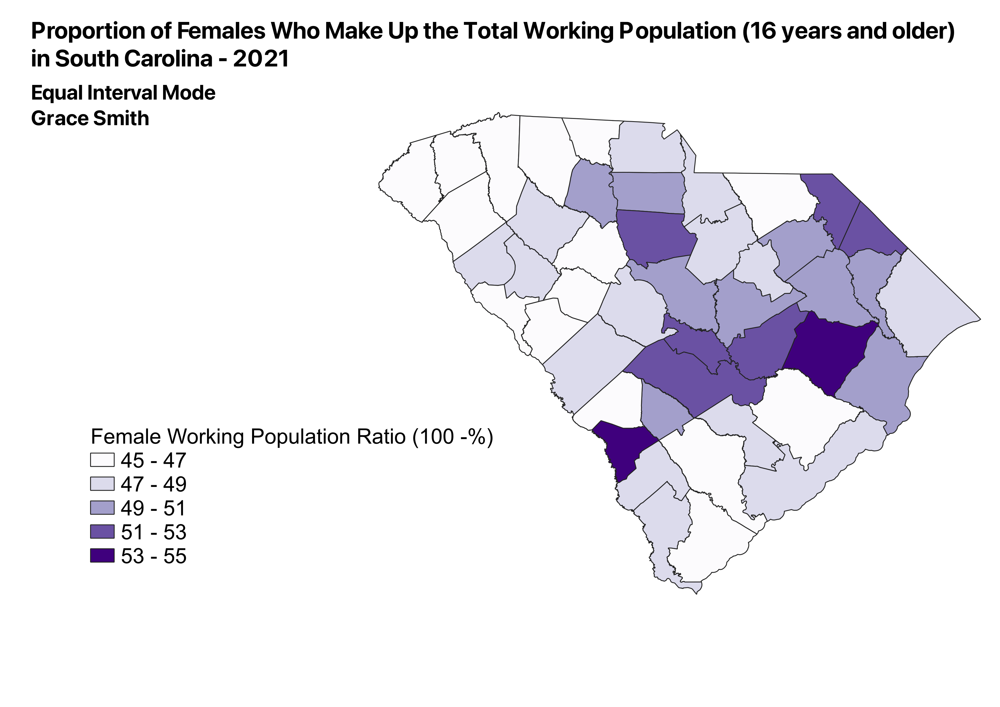
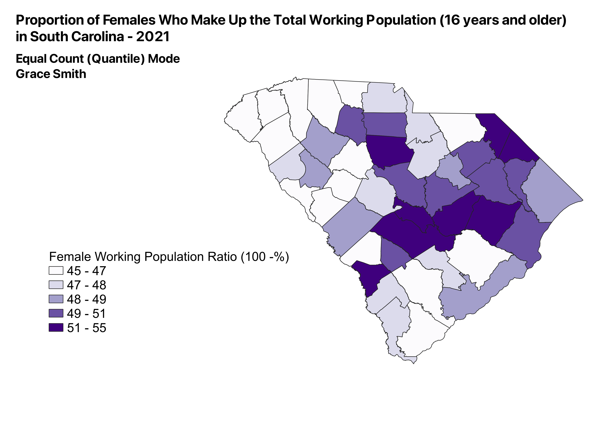

The data presented in the maps below is the same, just presented in different modes of classification. The data is of employment of individuals in South Carolina in 2021. The ratio that was made was between the female working populaiton and the overal working population (female/total). I did this to see where females took up more of the work force proportionally than in other areas. It should be noted that 2021 data was still likely impacted by the layoffs and furloughs that arrose due to the COVID-19 pandemic.
NOTE: I was not able to use the same exact data as part 1 of Homework 6 because it was already in a ratio. But this is similar concerning employment in South Carolina in 2021.
put pros and cons here
put pros and cons here
put pros and cons here